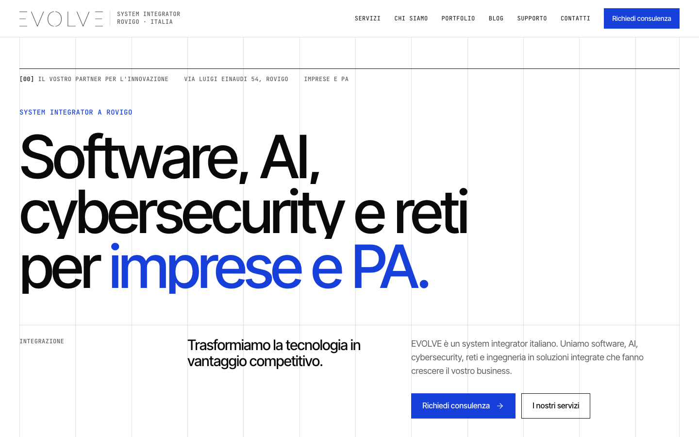

Direzione 1
Swiss Engineering
Una pagina che sembra un disegno tecnico: griglia a 12 colonne visibile, sezioni numerate, tipografia enorme e un solo colore, un blu elettrico usato a campiture piene. Parla a uffici tecnici, IT manager e PA che cercano rigore e precisione; funziona per Evolve perché trasforma 'ingegneria a 360°' in un linguaggio visivo ordinato e misurabile.
Inter Tight + JetBrains Mono
Cosa corregge del sito attuale
- Colore di brand quasi assente (pagina grigia): qui il blu diventa protagonista
- Logo: file originale mai sotto i 168px di larghezza (sul sito attuale le linee sottili si perdono sotto i 140px)
- Contrasto CTA principale 5.96:1 (gradiente attuale) → 7.58:1 (bianco su #1640D9)
- Gerarchia: sezioni numerate 01-05 al posto di badge grigi tutti uguali